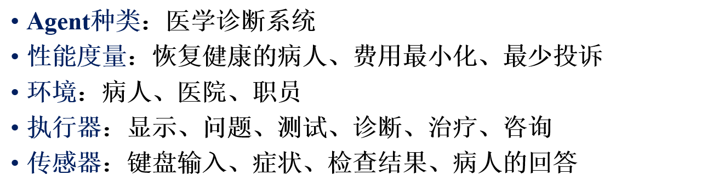
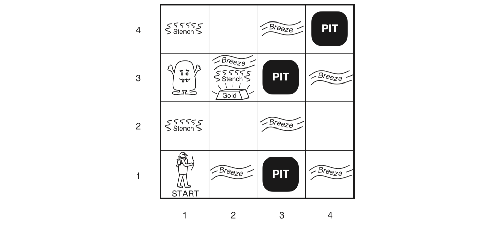
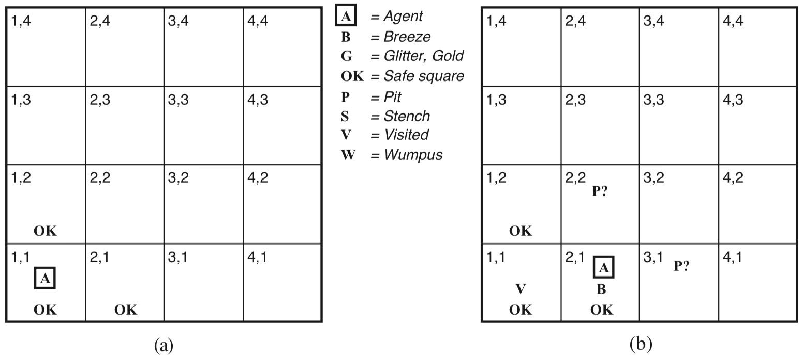
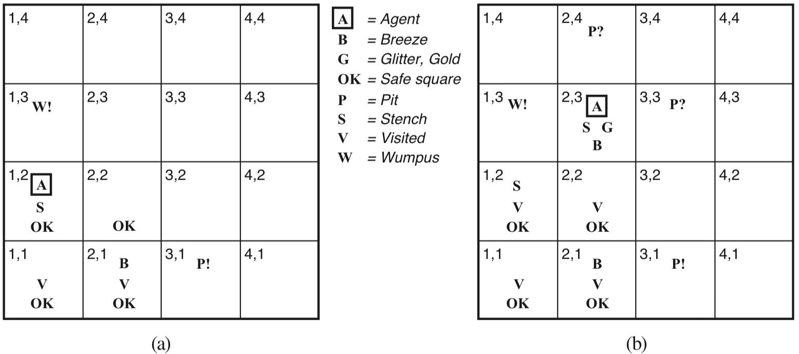
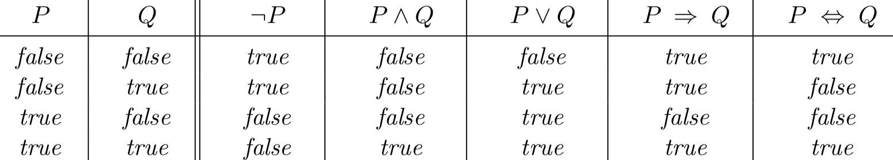
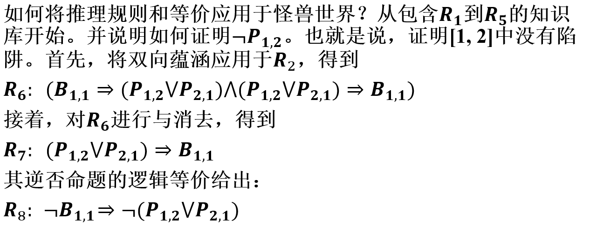
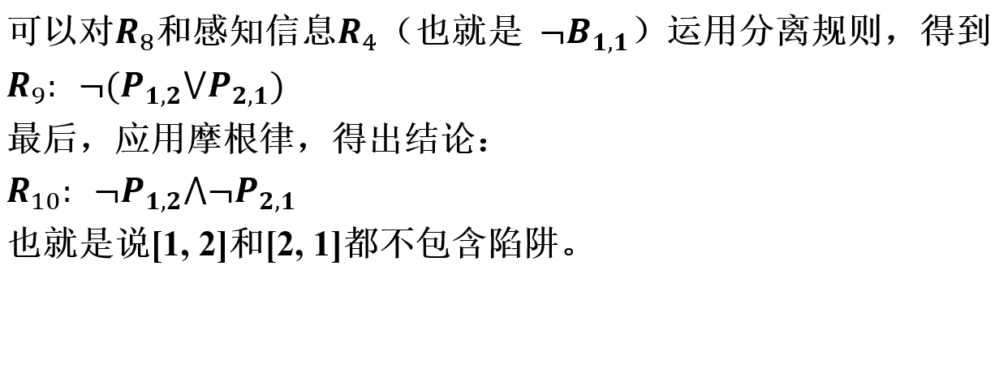
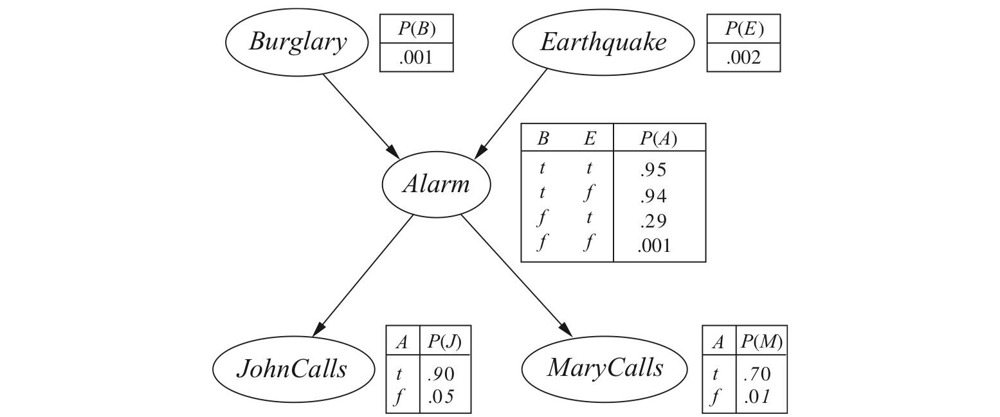

"复习课的主旨"
"去看GZQ的PPT"
然后Jerry告诉了我一些考题, 我的评价是"xx"
道听途说的题目归纳
什么是人工智能
- 答4个定义, 越多越好
默写BN范式
- ? 有病
考离散里面的等价公式 (包括他们的名称)
计算贝叶斯, 以及贝叶斯网这个图里面元素的意义
绪论: 什么是人工智能, 给出功能模块和实现方法
基本概念
- 像人一样思考的系统
- 理性地思考的系统
- 像人一样行动的系统
- 理性的行动的系统
- 理性Agent方法: Agent 是某种能够行动的东西. Rational Agent 可以通过自己的行动获得 最佳的结果 或者在不确定的情况下获得 最佳期望
- 功能有 能做正确的推论, 若没有能证明正确性的事情, 但是必须 有所行动.
部分完成理性行动的方法和推论过程无关 (如反射活动)
图灵测试
理性的好处:
- 比"思维法则"方法通用, 正确的推论只是实现理性的方法之一
- 比人类思维更经得起科学的考验 (可以证伪)
功能模块: 也就是说, 作为人工智能, 你觉得计算机应该需要哪些模块
- 自然语言处理: 计算机可以用各种语言成功交流
- 知识表示: 储存计算机所知道的信息
- 自动推理: 用于回答问题和提取新的结论
- 机器学习 (即归纳推理): 能适应新环境, 并能检测和推断新模式
- 计算机视觉: 可以感知物体
- 机器人技术: 可以操作物体
实现方法: 从组成架构需要哪些模块, 和训练Agent的途径回答
- 组成模块: 传感器, 执行器
- 需要编写Agent程序, 获得Agent函数
- 可以通过机器学习, 不确定性决策和规划等方法
四种定义
- 1. 像人一样思考的系统
- 2. 理性思考的系统
- 3. 像人一样行动的系统
- 4. 理性行动的系统
图灵测试 (Turing Test)
目的是为智能提供一个满足可操作要求的定义
- 如果人类在提出一些书面问题后, 计算回答这些问题, 若无法判断答案是否由人写出, 那么计算机通过了图灵测试 (对于无法给出定义的题目, 应该给出其评价标准)
理性 Agent 方法
Agent
是某种能够行动的东西, 可以实现自主控制的操作, 感知环境, 持续能力, 适应变化, 以及有能力承担其他Agent的目标
- 要么能做出正确推论, 要么对某件事情有所行动
Rational Agent
可以通过自己的行动获得 最佳的结果 或者在不确定的情况下获得 最佳期望的结果
- 比思维法则通用
- 比建立在人类行为, 思维基础上的方法更经得起科学发展的检验
理性
- 完美理性: 总能做正确的事情，这在复杂环境下是不可行的。但完美理性是分析的出发点，这样可以简化问题
- 有限理性: 要求在没有足够计算时间的前提下采取正确的行动
智能化Agent: Agent的架构。并且要理解Agent的任务、环境、评价标准等
从分析Agent、环境、和它们的关系入手。观察到某些Agent比其它Agent更为出色，从而引出理性Agent的概念：行为表现尽可能好的Agent; 对环境进行分类, 说明环境对Agent的影响; 给出部分Agent的架构或体系结构
基本概念
关于智能体, 理性智能体的概念
Agent
- 通过传感器感知所处的环境, 通过执行器对环境产生作用
- 例子 (人类, 机器人, 软件等)


Agent和环境
- 感知信息: 任何时刻的感知输入
- 感知序列: 所有的输入数据的完整历史
- Agent在任何时刻的行动选择, 取决于到该时刻为止的整个感知序列
- Agent函数: 将任意给定感知序列映射到Agent的动作。可以描述Agent的行为。可以用列表表示, 可以通过实验找出感知序列、并记录Agent的行动，来构造该表。Agent函数是抽象的数学表示。Agent程序是具体实现。该程序在Agent自身的结构上运行
- 理性Agent是做事正确的智能体, 因此需要一些评判标准, 判断智能体做的正确与否
性能度量
- Agent成功程度的标准
- 具体而言: 当把Agent置于一个环境中后，它将针对收到的感知信息产生动作序列。该动作序列引起环境历经一个状态序列。如果该状态序列是想要的，则Agent的性能良好。
- 概括来说就是: 智能体在环境中 > 智能体产生动作序列 > 影响环境 > 环境产生状态序列 > 判断状态序列是否为期望的
理性的判断标准
- PPT, 要记
- 定义成功标准的性能度量
- Agent对环境的先验知识
- Agent可以执行的动作
- Agent的感知序列
理性Agent的标准严谨定义
对于每个可能的感知序列，根据已知的感知序列提供的证据(evidence)和Agent内建的先验知识，理性Agent应该选择期望能使其性能度量最大化的行动。
信息收集是理性的重要部分: 理性Agent需要经常进行观察
理性还要求智能体 从感知的东西中学习
理性和全知
全知的智能体, 知道它的动作产生的实际效果, 并且做出相应的动作
理性不等于完美: 理性是使期望的性能最大化。而完美是使实际的性能最大化
函数计算: 设计者与Agent是分工和合作的关系
- 设计阶段: 设计者完成一些计算
- 决策阶段: 思考下一步动作时, Agent会做更多的计算
- 学习阶段: 从经验中学习的时候, Agent会做更多的计算 以决定如何修正自己的行为
学习和自主性
理性Agent是自主的, 会尽可能学习以弥补不全面, 不正确的先验知识.
学习是Agent自适应性的基础
关于环境的概念
任务环境(PEAS)
包括 性能度量Performance, 环境Environment, 执行器Actuators, 传感器Sensors
 属性集: 完全可观察的、部分可观察的; 确定的、随机的; 情节的、连续的; 静态的、动态的;离散的、连续的; 单Agent、多Agent
Agent的类型
AI的任务是设计Agent程序, 实现感知信息映射到动作的Agent函数. Agent = 程序 + 体系结构.
Agent程序
具有相同的框架：从传感器得到当前感知信息作为输入，返回一个动作交给执行器

Agent程序和Agent函数的区别
程序: 以当前的感知作为输入
函数: 以整个感知历史作为输入
表驱动的Agent
Agent程序 > 感知新的信息 > 记录感知序列 > 使用感知序列作为索引，到动作表里查询以决策该做什么 > 动作表明确表示了Agent程序实现的Agent函数。
存在的问题: 没空间, 没时间, 没指导.
因此可以对Agent进行一些限制, 以满足日常的需求: 不同的Agent区别在于: Agent函数不一样
- 先画图, 再解释
简单反射型Agent : 简单反射型Agent基于当前的感知选择行动，忽略其余的感知历史。
可以建造一个通用的 条件-行动 规则解释器. (不包含历史信息, 只根据当天的环境). 条件-行动规则解释器又称 如果-那么规则, 产生式

一些缺点
只有在可以仅根据当前感知信息来完成决策的情况下才能工作。只有环境完全可观察的情况下，即使有少量不可观测的情况也会引起严重问题
在部分可观察的环境中，简单的反射型Agent可能陷入无限循环
随机化
随机化可以部分避免无限循环的问题。随机的简单反射Agent其表现可能胜过确定性的简单反射Agent
举例
人脸识别、语音识别等是简单反射型Agent
基于模型的反射型Agent
包含历史信息, 状态信息.
- 内部状态包括: 世界如何独立于Agent而发展的信息; Agent自身的动作如何影响世界的信息

举例
深度学习中的LSTM、和注意力机制等属于基于模型的反射型Agent
基于目标的Agent
不仅需要采用行动, 还需要规定相应的目标. 既要追踪记录世界的状态，又要记录要达到的目标集，并选择能（最终）达到目标的动作

判断执行的动作会不会使得自己离目标更近
注意基于目标和基于条件-行动规则有根本的不同
举例
路径规划、8数码问题等属于基于目标的Agent
基于效用的Agent
单靠目标难以在多数环境中产生更好的行为, 需要更快, 更安全, 更可靠等; 如果一个世界状态比另一个更受偏好，则对Agent来说有更高的效用（utility）
效用函数: 描述Agent与状态相关的偏好程度, 在目标不充分的情况下有助于理性决策
- 多目标: 加权
- 存在冲突目标: 折中
- 拥有显式的效用函数的Agent可以做出理性决策

结果的获得
最佳期望效用是通过计算所有可能结果状态的加权平均值得到，其权值由结果的概率确定
举例
机场选址、雄安新区、高铁路线等决策，属于基于效用Agent
学习Agent
- 学习元件: 负责改进, 利用来自评价原件的反馈, 评价Agent做得如何, 并决定应该如何修改执行元件以在未来做得更好
- 执行元件: 负责选择外部动作
- 评价元件: 评价Agent做得如何
- 问题产生器: 负责提议可以产生新的, 有启发式价值的经验和动作

例子: 西洋跳棋, 强化学习
逻辑Agent
- 命题逻辑的语法
- 推理模式, 方法
- 怪兽世界的推理 (\(R_1-R_{10}\)的证明, \(R_{11}-R_{15}\)将句子转化成合取范式, 然后基于归结或反证法的证明)
- 理解推理规则和公理, 用于命题逻辑的推理
- 命题逻辑的连接符及语义
什么是逻辑Agent
- 研究可表示世界的Agent。采用推理过程以得到关于世界的新表示，并且用这些新表示来推导下一步做什么
- 讨论知识的表示与推理过程
推理
- 可以产生新的知识，可以增强感知能力，尤其在部分可观察的环境中
- 只有推理才能够处理部分可观察的环境。推理包括演绎推理、归纳推理等。归纳推理就是机器学习
逻辑
知识库由语句构成; 用 语法来表达语句; 还要定义语义, 语义必须和语句的“含义”有关。语言的语义定义了每个语句关于每个可能世界的真值。
基于知识的Agent
具有灵活性, 能通过被告知, 主动学习环境的新知识从而快速获得能力, 并可以通过相关知识以适应环境的变化
核心构件是 知识库(Knowledge base, KB), 知识库是语句(sentence)的集合.
- 知识库的操作有
TELL,ASK,FOLLOW
每次调用Agent程序, 完成以下内容:
TELL知识库自己的感知内容ASK知识库应该执行什么动作, 知识库根据当前世界的状态, 可能动作序列的结果进行推理- 选择动作后, Agent要
TELL知识库, 记录选择的动作并执行
完全自治的Agent: 为Agent提供某种机制, 使它可以自我学习. 并且学习得到的知识可以并入知识库, 用于决策.
怪兽世界 (Wumpus World)
怪兽世界
由多个房间组成，由通道连接起来的洞穴。在洞穴的某处隐藏着一只怪兽，它会吃掉进入房间的人。Agent可以射杀怪兽，但是只有一只箭。某些房间内有陷阱，人会被陷阱吞噬。但是怪兽除外。因为它太大。某些房间有金子。
 PEAS描述如下:
- 性能度量: 捡到金子得+1000，掉进陷阱-1000，被怪兽吃掉-1000，每采用一个动作-1，用掉箭-10
- 环境: 𝟒×𝟒的房间网格。Agent每次都从标号[1, 1]的方格出发，面向右方。金子和怪兽的位置按均匀分布、随机选择除了起始方格以外的方格。另外，除了起始方格外，任一方格都可能为陷阱，概率为0.2
- 执行器: Agent可以向前移动、左转90度、右转90度。如果进入陷阱、或有活着怪兽的方格，将死去。进入有死怪兽的方格，是安全的。尽管很臭。如果Agent前方有墙，则向前移动无效。动作Grab可以捡起Agent所处方格的物体。动作Shoot向Agent正对的方向射出一支箭。Agent只有一支箭，因此只有第一个Shoot动作有效。
- 传感器: Agent有5个传感器，每个可以提供单一信息。在怪兽所在之处、以及与之直接相邻（非对角的）方格内，可以感知到臭气。在于陷阱直接相邻的方格内，可以感知到微风。在金子所处的方格内，可以感知到闪闪金光。当Agent撞到墙时，它感知到撞击。当怪兽被杀死时，它发出嚎叫，在洞穴内的任何地方都可以感知到。
初始化:
感知：臭气、微风、金光、撞击、嚎叫
动作：前移、左转90度、右转90度、捡起物体、射箭
初始状态：[1, 1]，且是安全的。方向：朝右
Agent比较保守, 总是选择已经标注为
OK的方格前进
 根据[1, 1]没有臭气、微风的事实，Agent可以推断[1, 2]和[2, 1]都没有危险。用一个OK标注该事实。谨小慎微的Agent将只移动到那些已经明确标志为OK的方格。假设Agent决定向前移动到[2, 1]
Agent在[2, 1]检测到微风，因此在相邻的某个方格中必然有一个陷阱。根据游戏规则，陷阱不可能在[1, 1]，陷阱必然在[2, 2]、[3, 1]、或两者都有. 图中符号?表示在这些方格中可能存在陷阱。此刻标注为OK且未被访问的方格仅有一个。因此这个Agent会转身返回[1, 1]，接着前进到[1, 2]。
 [1, 2]的新感知为[Stench, None, None, None, None]。造成如图7.4(a)所示的知识状态。在[1, 2]中的臭气意味着附近必定有怪兽。但是根据游戏规则，怪兽不可能在[1, 1]。而且也不可能在[2, 2]。否则在[2, 1]时应该可以检测到臭气。因而，能够推断怪兽在[1, 3]。用符号W!标识。此外[1, 2]中没有微风，暗示着[2, 2]不存在陷阱。然而已经推断出[2, 2]或[3, 1]中必定有一个陷阱，因此该陷阱在[3, 1]。
到目前为止，Agent已经证明[2, 2]中没有陷阱、没有怪兽，因此它的标注为OK，可以安全地移动过去。将不显示Agent在[2, 2]的知识状态，只是假设Agent转身并移动到[2, 3]。
Agent在[2, 3]检测到金光，因此捡起金子、游戏结束。
在每种情况下，Agent根据可用的信息得出结论。如果信息正确，那么结论保证是正确的。这是逻辑推理的基本性质。
命题逻辑语法
逻辑蕴涵(entailment): \(\alpha \models \beta\)
- 语句\(\alpha\)蕴涵语句\(\beta\)当且仅当在\(\alpha\)为真的每个模型中, \(\beta\)也为真 (\(\alpha\)为真, \(\beta\)也为真)
- 模型的意思相当于赋值
对于Agent回到(1,1)后, 一共有8种赋值情况, 其中, 若做0步推导 (只依靠本身的知识), 则只有3种情况使得KB为真, 若再次基础上提出两个推论:
- \(\alpha_1=[1,2]\)中无陷阱
- \(\alpha_2=[2,2]\)中无陷阱
则有结论: \(KB \models \alpha_1\), \(KB \nvDash \alpha_2\)
逻辑推理和模型检验
- 蕴涵和逻辑推理的区别。蕴涵是通过真值表进行推理，也叫模型检验。而逻辑推理是通过推理规则集进推理
推导: \(KB \vdash_i \alpha\)
- \(\alpha\)通过推理算法\(i\)从KB导出
- \(i\)从KB导出\(\alpha\)
推理的可靠性和完备性
- 可靠性: 只导出蕴涵句的推理算法被称为可靠的、或真值保持的推理. 模型检验在可行的情况下是可靠的过程。
- 完备性: 推理算法是完备的。
命题逻辑
逻辑连接符
连接符 意义 \(\neg\) 非, 否定式 \(\wedge\) 与, 合取式 \(\vee\) 或, 析取式 \(\Rightarrow\) 蕴涵式 \(\Leftrightarrow\) 当且仅当, 双向蕴涵式
优先级顺序 (从高到低): \(\neg, \wedge, \vee, \Rightarrow, \Leftrightarrow\)
命题逻辑的BNF
1 | Setence -> AtomicSentence | ComplexSentence |
括号不能省 (除非依赖优先级)
语义 用于判定关于特定模型的语句真值的规则
真值表

知识库的构建
考虑怪兽世界: \(B_{i,j}\)表示\((i,j)\)有微风, \(P_{i,j}\)表示\((i,j)\)有陷阱, 构建如下的知识库
语句 \(R_1\) \(\neg P_{1,2}\) \(R_2\) \(B_{1,1} \Leftrightarrow (P_{1,2} \vee P_{2,1})\) \(R_3\) \(B_{2,1} \Leftrightarrow (P_{1,1} \vee P_{2,2} \vee P_{3,1})\) \(R_4\) \(\neg B_{1,1}\) \(R_5\) \(B_{2,1}\) 于是知识库可以为\(R_1 \wedge R_2 \wedge R_3 \wedge R_4 \wedge R_5\); 知识库可以看成单一语句，也可以看成多个语句的合取。只是看问题的角度不同而已
逻辑推理的目标是判断某些语句\(\alpha\), \(KB \models \alpha\)是否成立
推理模式, 推理方法
- 画真值表 (不推荐, 繁琐)
- 运用公式法则 (重要, 要记)


重言式 (合法的)
- 在所有的模型中都为真
可满足性
- 在某些模型中为真
反证法
\(\alpha \models \beta \Leftrightarrow (\alpha \wedge \neg \beta)\)是不可满足的
推理模式
用一些标准模式推导出结论链, 假设横线上方的公式为真, 推导出下方的东西也为真
分离规则(Modus Ponens)
\(\frac{\alpha \models \beta, \alpha}{\beta}\)
消去规则
\(\frac{\alpha \wedge \beta}{\alpha}\)
所有逻辑等价都可以作为推理规则


证明
- 推理规则的应用序列
- 有两种证明方法，真值表和推理。显然：真值表是正确且完备的，但效率低。而推理的效率高，但是推理规则集可能正确、但不完备
单元归结规则
\(\frac{l_1 \vee \cdots \vee l_k \quad m}{l_1 \vee \cdots \vee l_{i-1} \vee l_{i+1} \vee \cdots \vee l_k}\)
- 其中 \(l_i\)与\(m\)互补
全归结规则(长度为2)
\(\frac{l_1 \vee l_2 \quad \neg l_2 \vee l_3}{l_1 \vee l_3}\)
归并
- 合并文字的多余副本
- 即 \(A \vee A \Leftrightarrow A\)
归结: 只能取一项进行归结, 不能同时取很多项, 只用于文字的析取式
合取范式(CNF): 文字析取式的合取形式, CNF, 如何转化
- \((l_1 \vee \cdots \vee l_{a}) \wedge \cdots l_1 \vee \cdots \vee l_{b}) \wedge \cdots\)
Horn子句
- 最多只有一个正文字
知识表示
- 情景演算, 情景, 流, 前提条件公理 (可能性公理), 效应公理等概念 (背)
- 本体论, 类别, 对象, 举例说明 (背)
讨论的是 如何表示世界的事实, 着重于在不同领域都会出现的通用概念, 如动作, 时间, 物理对象, 信念, 表示这样的抽象概念是 本体论工程(en?)
把世界上的所有事物组织到一个有层次的分类中。着重于不同领域中都会出现的通用概念——事件，时间，物理对象和信念等. 本体论工程就是表示这些抽象概念。
本体论工程(Ontology Engineer)
主要着重于在不同领域都会出现的通用概念，包括表示动作, 时间, 物理对象, 信念等抽象概念称为 本体论工程
可以留下一些占位符, 使任何领域的知识都能填入
概念的通用框架称为 上层本体
可以用树型结构表示, 弧下面的概念是上面概念的一个特殊化
专用本体和通用本体的区别
- 通用本体应该或多或少应用于专用领域（附加必要的领域特定公理)
- 在任何足够苛刻的域，不同领域的知识必须统一起来，因为推理和问题求解可能会同时涉及多个领域
类别和对象
将对象组织成类别是知识表示中的重要部分。虽然世界上的相互关系发生在对象层次上，但是多数推理发生在类别层次上, 类别和对象是认知世界的基础
从感知输入推断某些对象的存在，从对象的可感知属性推断其类别归属，然后用这些类别信息对这些对象做出预测。
类别, 子类, 对象和集合论
- 对象组织成类别
- 类别可以作为另一个类别的对象, 称为子类
- 类别可以通过继承来简化和组织知识库
- 子类关系将类别用 分类法 (分类层次) 组织起来
对象, 类别, 属性
- 对象是类别的成员
- 类别是另一个类别的子类
- 一个类别的所用成员拥有某种属性
- 类别的成员可以通过某种属性来识别
- 一个类别作为整体拥有某种属性
不相交
- 没有公共成员
完全分解
- 并集为全集
划分
- 互不相交且并集为全集
- 一个不相交的完全分解称为划分
物质成分
- 某个对象是另一个对象的一部分
部分划分
堆
- 有确定的部分却没有特定结构的复合对象
逻辑最小化
\(\forall y (\forall x \in s \Rightarrow PartOf(x,y) \Rightarrow PartOf(BunchOf(s), y))\)
事物(Stuff)和物体(Thing)的区别
事物由大量的原始对象组成, 并且没有明显的个性化, 例子: 黄油, 黄油的任何一部分仍是黄油, 除非分解成非常小的部分
物体, 例子: 小狗, 小狗的任何一部分不是小狗
动作, 情景, 事件, 流
动作
- 对动作结果的推理是基于知识的Agent运作的中心问题
情景
- 实施动作产生的状态
- 指一些逻辑项，由初始情景（常称为\(𝑺_𝟎\)）和所有在某个情景上应用一个动作后生成的情景组成
避免公理的多个副本的明显方法就是简单地在时间轴上进行量化
情景演算
- 将对时刻的讨论转换为对情景的讨论
- 是一种用一阶逻辑，将线性时间的概念用分支情景的概念替换的表达方法
流
- 流（fluent）指的是使情景从一个变换到下一个的函数和谓词
- 流是函数和谓词，强调情景的变换。情景是流的最后一个参数
可能性公理 (前提条件公理 Possibility)
- 表述动作的前提, 说明什么时候可以执行该动作
- 可能性公理陈述了一个Agent能够在相邻位置间移动，能够在当前位置抓住一块金子，也能够放开它持有的一些金子
效应公理 (effect)
- 表述某个可能的动作被执行后会发生什么
- 如果一个动作是可能的，那么在执行此动作而产生的情景中某些属性（流）会成立
- 说明了什么会被改变, 却没说什么东西不变
框架公理
- 需要明确说明哪些一直保持不变
概率推理
- 贝叶斯网络的定义, 语义
- 给定贝叶斯网络, 写出相应的联合概率分布
- 针对书中的盗贼警报任务, 理解贝叶斯网络的精确推理, 并能够在给定证据的情况下进行推理
贝叶斯网络的定义和语义
贝叶斯网络的定义
- 有向无环图
- 每个节点都标注了定量概率信息
- 包含随机变量集组成的网络节点
- 包含连接节点的有向边集合
- 每个节点都有一个条件概率分布 \(P(X_i | Parent(X_i))\), 用来量化父节点对该节点的影响
独立性, 条件独立性, 不确定域中的知识表示
贝叶斯网络的语义
- 将贝叶斯网络视为对联合概率分布的表示。用于构造网络
- 将其视为对条件依赖性语句集合的编码。用于设计推理过程. (条件独立)
\[ P(x_1, \cdots, x_n) = \prod_{i=1}^n P(x_i | parents(X_i)) \]
例子 计算报警器响了，但没有盗贼闯入，也没有发生地震，同时John和Marry都给你打电话的概率。
 \[ \begin{align} p(a,\neg b, \neg e, j ,m) &= p(a | \neg b, \neg e)p(\neg b)p(\neg e)p(j | a)p(m | a) \\ &= 0.001 \times 0.999 \times 0.998 \times 0.9 \times 0.7 \end{align} \]
条件独立关系
- 给定父节点，一个节点与它的非后代节点是条件独立的
- 给定一个节点的父节点、子节点、以及子节点的父节点。也就是说，给定它的马尔可夫覆盖（Markov blanket），则这个节点和其它所有节点都是条件独立的
- 减少了所需定义的概率数目
精确推理
在给定某个已观察事件，也就是一组证据变量的某个赋值后，概率推理系统的基本任务都是要计算一组查询变量的后验概率分布。
指定简单决策
- 理解什么是偏好, 效用, 最大期望效用原则 (计算期望)
- 理解决策网络, 尤其是网络中的结点类型
- 给定网络, 计算不同动作的期望效用, 并选具有最大期望效用的动作
效用
- 将状态映射到实数的函数
效用函数
- 在世界状态之间的偏好采用效用函数表示。这个效用函数分配一个数值来表达对某个状态的愿望度。效用与动作的结果概率相结合，提供了每个动作的期望效用
偏好
- 某个状态的愿望度
最大期望效用MEU
- 表达指出理性Agent应该选择能最大化该Agent的期望效用的那个动作
决策网络
- 决策网络表示下述信息：Agent的当前状态、其可能动作、Agent的动作所产生的状态、以及状态的效用
例题
https://blog.csdn.net/weixin_44340586/article/details/109224994
在不确定性环境下结合信度和愿望

- Post title: 【人工智能】人智导论复习
- Create time: 2023-01-05 15:54:09
- Post link: 2023/01/05/ML/IntroductionToAI/
- Copyright notice: All articles in this blog are licensed under BY-NC-SA unless stating additionally.